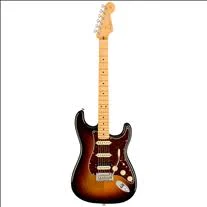
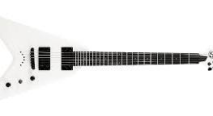
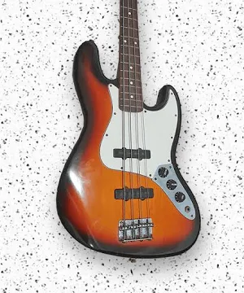
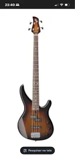

Guitarra Stratocaster Fender American Professional II
Guitarra de 6 cordas retro com 3 amps!Perfeita para uso profissional no maior estilo e potência que só uma Strato proporciona!
Por apenas R$ 9.587,00!!!

FRIZZO STORE - Estilo e potência em cada detalhe.
Guitarra de 6 cordas retro com 3 amps!Perfeita para uso profissional no maior estilo e potência que só uma Strato proporciona!
Por apenas R$ 9.587,00!!!

Guitarra de 6 cordas,branca fosca, perfeita pra metaleiros! Seu som de metal com qualidade e potência!
Por apenas R$2.500,00!!!

Baixo de 4 cordas,modelo vintage, som combina perfeitamente com a Stratocaster Fender American Professional II!

Baixo de 4 cordas, som extremamente limpo!
